Snakes of Nepal
75 snake species are recorded in Nepal in SnakeList: 29 venomous and 46 non-venomous, from 9 families.
- 75species
- 29venomous
- 46non-venomous
- 9families
These totals count the snakes SnakeList records as living in Nepal. A species counts if it is recorded anywhere in the country, so not every snake lives in every region.
Species
Showing 75 species
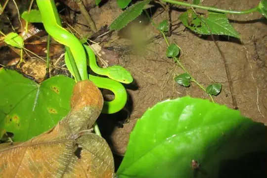
Bamboo PitviperTrimeresurus erythrurus Banded KraitBungarus fasciatus
Banded KraitBungarus fasciatus Banded KukriOligodon arnensis
Banded KukriOligodon arnensis Banded Racer (fasciolata)Argyrogena fasciolata
Banded Racer (fasciolata)Argyrogena fasciolata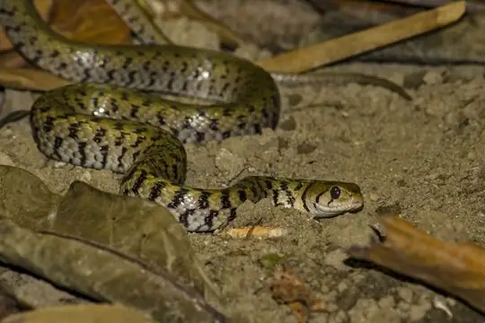
Bar-necked KeelbackFowlea schnurrenbergeri Barred Wolf SnakeLycodon striatus
Barred Wolf SnakeLycodon striatus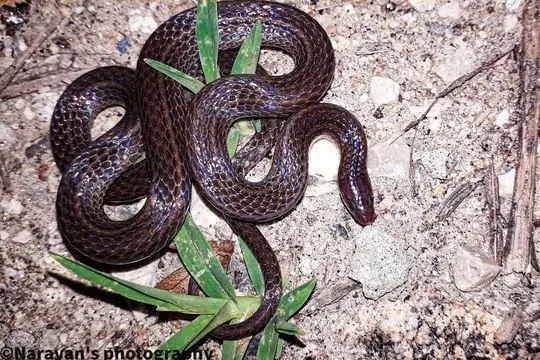
Blackbelly Worm-eating SnakeTrachischium fuscum Buff Striped KeelbackAmphiesma stolatum
Buff Striped KeelbackAmphiesma stolatum Burmese PythonPython bivittatus
Burmese PythonPython bivittatus Cantor's Kukri SnakeOligodon cyclurus
Cantor's Kukri SnakeOligodon cyclurus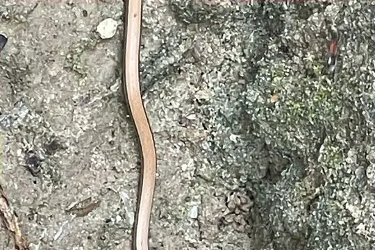
Cantor’s black-headed snakeSibynophis sagittarius- No photo yetCheckered KeelbackXenochrophis piscator
 Chequered KeelbackFowlea piscator
Chequered KeelbackFowlea piscator Chinese Mountain Pit ViperOvophis monticola
Chinese Mountain Pit ViperOvophis monticola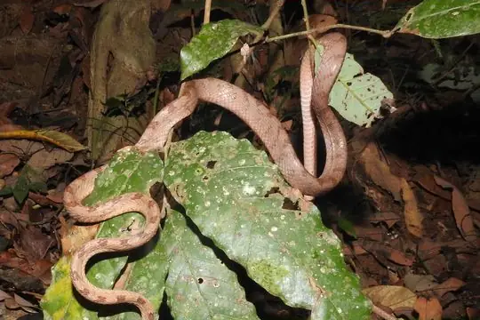
Collared CatsnakeBoiga nuchalis Common Cat SnakeBoiga trigonata
Common Cat SnakeBoiga trigonata Common KraitBungarus caeruleus
Common KraitBungarus caeruleus Common Many-tooth SnakeSibynophis collaris
Common Many-tooth SnakeSibynophis collaris Common Slug SnakePareas monticola
Common Slug SnakePareas monticola Common Wolf Snake (aulicus)Lycodon aulicus
Common Wolf Snake (aulicus)Lycodon aulicus Daudin's BronzebackDendrelaphis tristis
Daudin's BronzebackDendrelaphis tristis Diard's BlindsnakeArgyrophis diardii
Diard's BlindsnakeArgyrophis diardii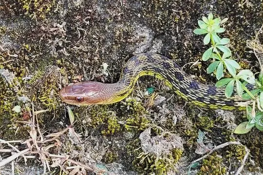
Eastern Trinket SnakeElaphe cantoris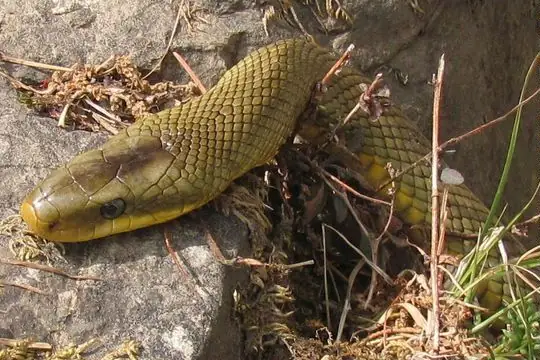
English common name not availableElaphe hodgsoni Forsten's Cat SnakeBoiga forsteni
Forsten's Cat SnakeBoiga forsteni Golden Flying SnakeChrysopelea ornata
Golden Flying SnakeChrysopelea ornata Gray Cat SnakeBoiga siamensis
Gray Cat SnakeBoiga siamensis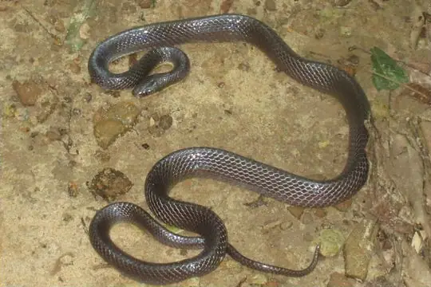
Greater Black KraitBungarus niger Green Rat Snake (nigromarginata)Ptyas nigromarginata
Green Rat Snake (nigromarginata)Ptyas nigromarginata Green Vine Snake (nasuta)Ahaetulla nasuta
Green Vine Snake (nasuta)Ahaetulla nasuta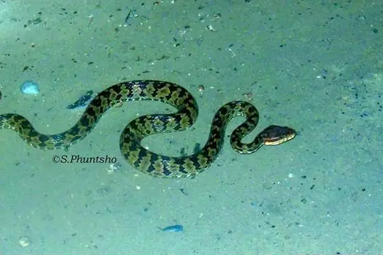
Habu Pit ViperProtobothrops himalayanus Himalayan KeelbackHerpetoreas platyceps
Himalayan KeelbackHerpetoreas platyceps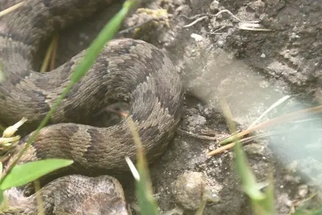
Himalayan PitviperGloydius himalayanus Indian CobraNaja naja
Indian CobraNaja naja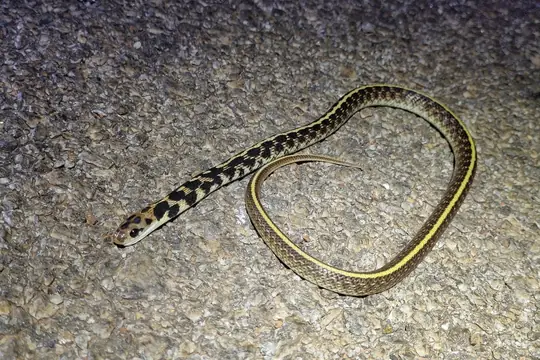
Indian Egg-eaterBoiga westermanni Indian Rock PythonPython molurus
Indian Rock PythonPython molurus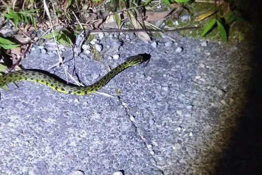
Jerdon's PitviperProtobothrops jerdonii- No photo yetJerdon's Worm SnakeIndotyphlops jerdoni
 King CobraOphiophagus hannah
King CobraOphiophagus hannah Laudankia Vine SnakeAhaetulla laudankia
Laudankia Vine SnakeAhaetulla laudankia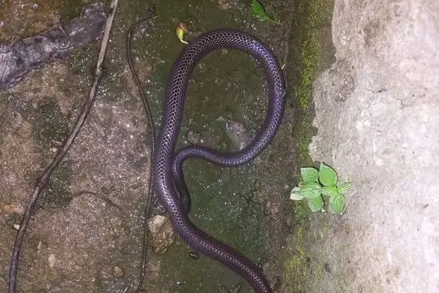
Lesser Black KraitBungarus lividus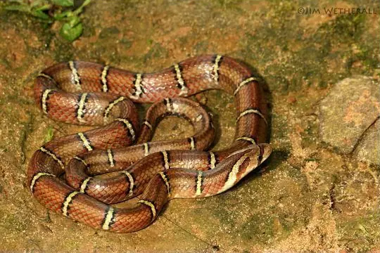
Light-barred Kukri SnakeOligodon albocinctus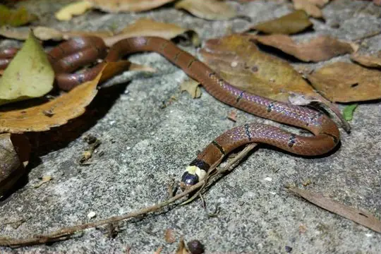
MacLelland's Coral SnakeSinomicrurus macclellandi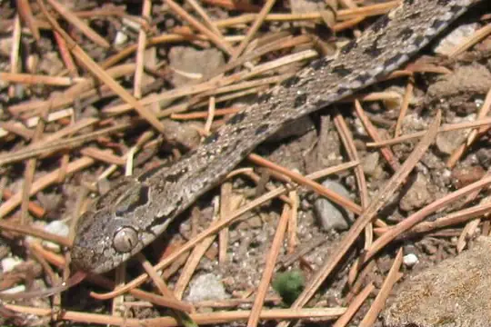
Many-banded Tree SnakeBoiga multifasciata Mock CobraPseudoxenodon macrops
Mock CobraPseudoxenodon macrops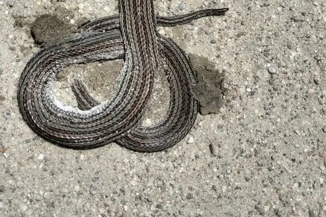
Nagarkot Kukri SnakeOligodon erythrogaster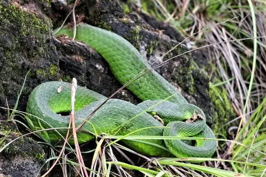
Nepal PitviperTrimeresurus septentrionalis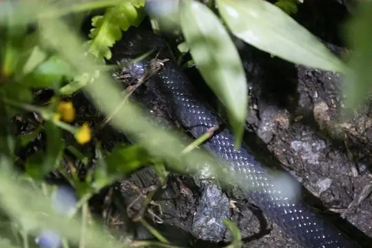
Northeastern Hill KraitBungarus bungaroides Northern Red-necked KeelbackRhabdophis helleri
Northern Red-necked KeelbackRhabdophis helleri Olive Keelback Wart SnakeAtretium schistosum
Olive Keelback Wart SnakeAtretium schistosum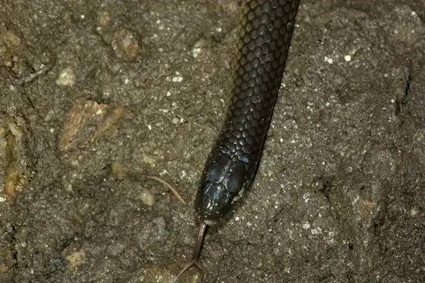
Olive Oriental Slender SnakeTrachischium laeve Orange-collared KeelbackRhabdophis himalayanus
Orange-collared KeelbackRhabdophis himalayanus Oriental RatsnakePtyas mucosa
Oriental RatsnakePtyas mucosa Painted Keelback (cerasogaster)Xenochrophis cerasogaster
Painted Keelback (cerasogaster)Xenochrophis cerasogaster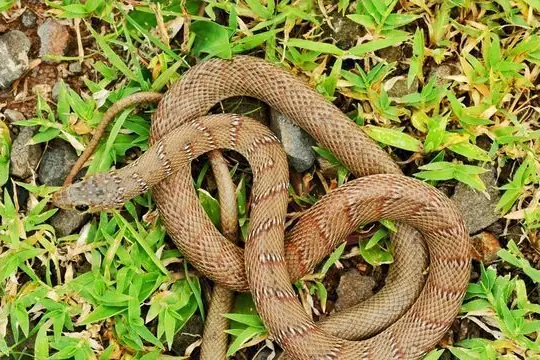
Plin's Banded RacerPlatyceps plinii Pope's Bamboo Pit ViperTrimeresurus popeiorum
Pope's Bamboo Pit ViperTrimeresurus popeiorum Radiated RatsnakeCoelognathus radiatus
Radiated RatsnakeCoelognathus radiatus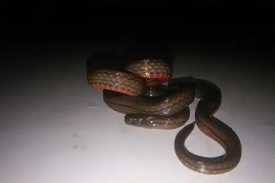
Rosebelly Worm-eating SnakeTrachischium guentheri Rough-tailed Sand BoaEryx conicus
Rough-tailed Sand BoaEryx conicus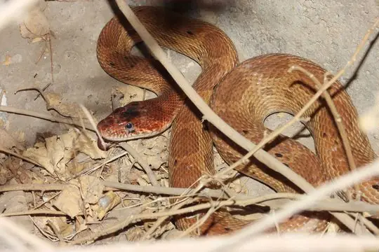
Royal snakeSpalerosophis atriceps Russell's ViperDaboia russelii
Russell's ViperDaboia russelii Sand Snake (condanarus)Psammophis condanarus
Sand Snake (condanarus)Psammophis condanarus Siebold's Mud SnakeFerania sieboldii
Siebold's Mud SnakeFerania sieboldii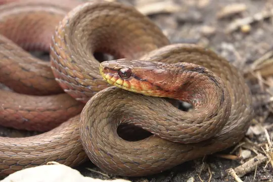
Sikkim KeelbackHerpetoreas sieboldii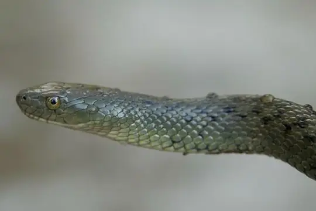
St. John's KeelbackFowlea sanctijohannis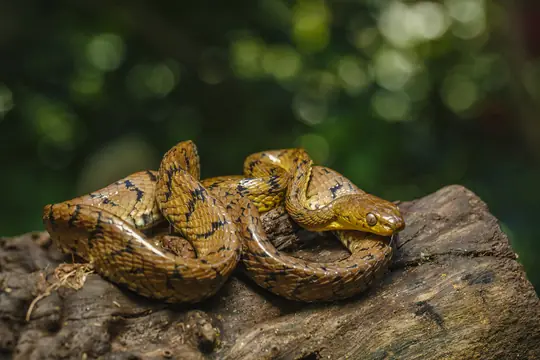
Stoliczk's Tawny Cat SnakeBoiga stoliczkae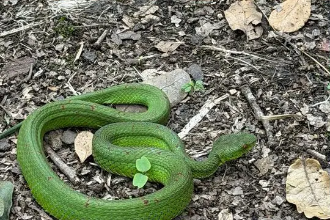
Tibetan Pit ViperTrimeresurus tibetanus Trinket SnakeCoelognathus helena
Trinket SnakeCoelognathus helena Twin-spotted Wolf SnakeLycodon jara
Twin-spotted Wolf SnakeLycodon jara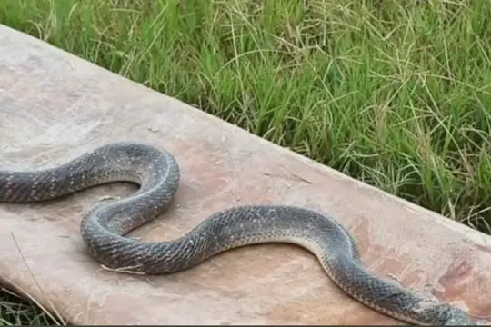
Wall's Sind KraitBungarus walli White-lipped PitviperTrimeresurus albolabris
White-lipped PitviperTrimeresurus albolabris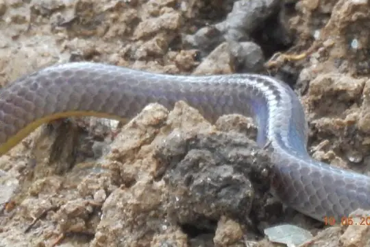
Yellowbelly Worm-eating SnakeTrachischium tenuiceps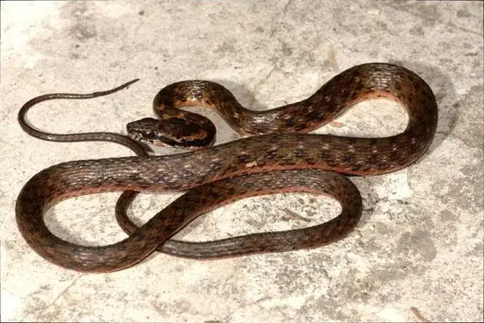
Yunnan keelbackHebius clerki- No photo yetYunnan KeelbackHebius parallelum
- No photo yetPseudoboa krait
No snakes in Nepal match.
Nepal’s snakes in numbers
- Families: Colubridae 48, Viperidae 10, Elapidae 9, Pythonidae 2, Typhlopidae 2, Boidae 1, Homalopsidae 1, Pareidae 1, Psammophiidae 1.
States and provinces
The states and provinces where SnakeList records snakes, with how many species each has. Each page has its families, venomous snakes, the species found only there, its cities and neighbours.
- Bagmati Zone 12 species
- Bheri Zone 3 species
- Bhojpur 1 species
- Dhaulagiri Zone 1 species
- Gandaki Zone 11 species
- Janakpur Zone 3 species
- Karnali Zone 1 species
- Lumbini Zone 3 species
- Mahakali Zone 3 species
- Mechi Zone 9 species
- Narayani Zone 5 species
- Rapti Zone 1 species
- Sagarmatha Zone 2 species
- Seti Zone 5 species
No place matches that.
Cities
Its biggest cities, biggest first. Snakes are recorded by state or province, not by city, so each city page shows the snakes of the state or province it is in.